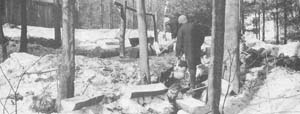
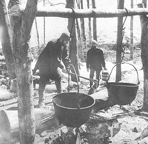
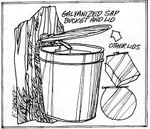
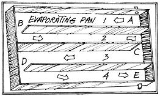
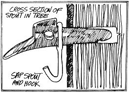
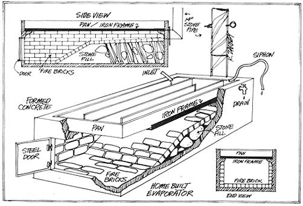
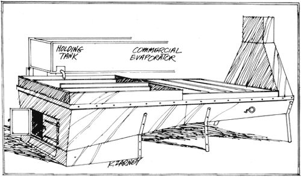
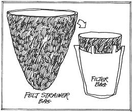
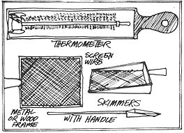

It's a long way from gathering maple sap in hollowed-out logs and boiling it down outdoors in iron kettles in 1800 . . . to the monsterous Reverse Osmosis Concentrator of Maple Sap now being tested by the U.S. Department of Agriculture. With equipment somewhere in between these two extremes, a lot of homestead and medium-to-large commercial operations produce a lot of maple syrup in this country every year. Commercial setups generally pump the sap right out of the trees and pipe it directly into specially-designed refineries these days. . . but the folks on a number of small homesteads still earn spending money by gathering maple juice in buckets and concentrating it over wood fires in homemade "arches". Sarah Funk is one of those folks and here's how the Funks do it up in Michigan.
If you live in the northeastern quarter of this country and have access to one or more hard maple trees, you've probably thought about making maple syrup. Well, by all means, get some equipment and give it a try! Don't let the fainthearts discourage you with their warnings about backbreaking labor and long, tedious cooking. Of course there's some work involved and patience required, but we've found that good things are worth working for . . . and sometimes it's that very work which makes good things even better!
There's a joyous sense of accomplishment in producing a healthful, organic sweetener for your kitchen (one less item to buy from the supermarket!) and, for sale or barter, syrup has an advantage over most farm produce: it's not perishable. We put ours away in the basement and sell most of it to summer visitors.
Whether you plan to make syrup for homestead use only or hope to sell some for a small income, think the procedure through both carefully and in advance. Decide how big an operation you want and secure all necessary equipment before you begin. Moments are precious once the sap starts running.
If you establish a small commercial venture (as we did), two main factors will limit the size of your operation: one is the number of trees available and the other is manpower.
Let's consider the trees first. A hard maple, five inches in diameter, is large enough for one taphole . . . a smaller tree can be permanently damaged if tapped. (In THE MAPLE SUGAR BOOK-the definitive work on the subject-the Nearings say not to tap a tree that is less than 12 inches thick two feet above ground level. In addition, Mr. Paul Richards of Chardon, Ohio and Mr. George Binnig, of Thompson, Ohio-both of whom are in the maple syrup business-strongly advise against tapping any tree under 10 inches in diameter and-even then-prefer waiting until the tree is 12 inches thick-MOTHER.) A tree twice as large may be tapped twice, while some old trees are large enough for three, four or even five tapholes. Don't be tempted to overtap . . . when in doubt, give the tree a break.
The season's yield from each taphole may be roughly estimated at 20 gallons, although the quality of the sap declines at the end of the flow and may not be worth collecting. Remember, of course, that this 20 gallons per taphole per season is only an approximate figure which will vary greatly according to location and other factors.
Another rule of thumb has it that about 40 gallons of sap will make one gallon of syrup . . . but the sugar content of sap is not constant and this figure will also vary. Combining these two figures, then (with many qualifications), we arrive at the rough estimate, under optimum conditions, of one gallon of finished syrup for every two holes tapped. Optimum conditions are seldom achieved, however, and we must allow for waste, spillage, spoilage and accidents. To be realistic, cut the above estimate in half and plan on one gallon of syrup for every four tapholes.
The other factor to consider in planning your operation is the number of people who will be available to do the work. Based on our experience last year (Arthur - my husband - and I did all the collecting, cooking and finishing from 150 tapholes), we would suggest that one person working full-time can handle 100 taps.
I'm probably sticking my neck out in making such an estimate because so much depends on the weather, the geography of your setup and plain old human nature. But I do think you'll be on the safe side if you don't undertake more than 100 tapholes per person during your first year.
Basic equipment for syrup making includes: (1) a brace and bit, (2) spouts and hooks, (3) collecting buckets and covers, (4) gathering pails, (5) a collecting tank, (6) a vehicle if you transport the sap any distance, (7) one or more holding tanks, (8) a sugarhouse or building where the sap may be boiled down, (9) the stovelike evaporator or arch on which the cooking is done, (10) an ample supply of firewood, (11) a cooking pan, (12) a hydrometer or thermometer, (13) skimmer, (14) milk can or similar container for holding the rough boiled syrup, (15) a finishing pan and stove, (16) felt strainer and (17) containers for the refined syrup.
If the list seems long, don't be discouraged! Most of the equipment can be improvised or bought secondhand. Run an ad in the local paper and you may find everything you need from one source. Here are two maple syrup supply companies that will be happy to send you their catalogs . . . but by all means, use them only as a last resort:
Sugar Bush Supplies Company
Box 1107
Lansing, Michigan 48904
G.H. Grimm Company, Inc.
Rutland, Vermont 05701
All containers, spouts, fittings, tanks and buckets which come into contact with the sap must be of a material - such as glass, plastic or stainless stee l - which can be thoroughly cleaned. Metals which would otherwise rust and contaminate the syrup should be treated with a lead-free nontoxic paint obtained from a maple syrup supply house such as the two mentioned above.
If you don't have a brace and bit for tapping your trees, you can usually borrow one from anyone who does some woodworking. Bits from 3/8 to 1/2-inch are used for this job and I favor the smaller size because it gives a tighter fit with less chance of leakage on the spouts we use.
Early settlers whittled tapping spouts from wood (some folks still do) and small boys have fashioned them from tin can covers . . . but you'll probably be better off buying than trying to improvise this particular item. As far as I can ascertain, the manufactured tapping spiles come in only one size. Each is banded by a metal ring with a hook that supports the collecting bucket.
You'll need one collecting bucket for every taphole (natcherly) . . . which can run into money. Try contacting the food processing plants in your area and asking if they ever discard five-gallon containers of any kind. We found a canning factory that had discontinued the use of some square, white, plastic five-gallon cans that were ours for the taking. I'm not fond of plastic but these buckets cost us nothing and are light, easy to clean and rustproof.
Make a small hole in the side of each container, near the top, and hang the bucket from the hook of one of the inserted spiles. A bucket this size will usually hold a day's run of sap but I make no guarantees. On a good day a good tap in a good tree will produce more than five gallons. But, since the best syrup is made from the freshest sap, you'll probably want to empty each collector can two or three times a day anyway . . . and you'll never have to worry about overflowing buckets.
The collecting containers must be covered to keep out snow, leaves, dirt and debris. We tried using tinfoil to protect ours at first, but the idea was a total flop. We finally devised some satisfactory lids out of scrap lumber by cutting the wood about two inches larger in each direction than the top of the bucket On the bottom side of every cover we nail two strips of wood (if the bucket is square) or three little blocks (if it's round) to fit just inside the rim of the bucket and hold the lid in place Then we cutaway a notch on one side (where the spout will be) to allow the sap to drip in . . . making sure the notch is large enough so the sap won't touch wood at any point.
The bought or scavenged dive-gallon containers used for collector buckets can also be fashioned into gathering pails by the addition of a bail. These pails are used for transporting fresh sap from the collector buckets to either a collector or holding tank and-unless you intend to sling them from a shoulder yoke-the bails should not be too long. You may find yourself carrying these pails through deep snow at times and the task will be much easier if the containers clear the drifts. Make two pails for each "tote" person and keep some extras on hand for friends who drop by to share the fun.
You won't need a collecting tank if yours is a small, well-placed sugaring operation where sap can be hand-carried directly from the tapping buckets to the sugar shed holding tanks. Few sugar setups are so compact, however, and most require the hauling of sap in some kind of receptacle.
A collecting tank needn't actually be a tank at all . . . it can be any sort of container that will hold a day's run of sap long enough to cart the liquid out of the woods. I've even heard of one fellow who uses half a dozen milk cans tied to his tractor.
The kind of container you come up with will depend on your method of transportation. We'd love to haul our sap out of the forest in a special sleigh behind a team of horses . . . but we've settled for a less romantic means of transportation. We use a four-wheel-drive truck with a 200-gallon tank on the back into which we bucket our maple juice. A tractor or jeep pulling a sled, wagon or trailer loaded with drums, tanks or five-gallon cans are other possibilities as long as they can get through the snow and slush.
Whatever your vehicle, make sure the collecting tank or tanks are securely fastened and covered. Roads in the woods are bound to be rough, there may even be inclines and a great deal of sap-unless precautions are taken-can splash out and be lost.
As fresh maple sap is collected, it must be stored in a holding tank or tanks until you have enough juice on hand to make boiling it worthwhile. The number of these tanks that you'll need depends on their capacity and the size of your sugaring operation. Our storage tank (a twin to the collecting tank we use) holds 200 gallons, which is barely adequate, and we hope to add a second holding tank of the same size this year.
By the way, our tanks were originally used by local cherry growers-for transporting fruit. We got them for very little and I think similar containers are used by cherry growers in other parts of the country. Ask around and you may find a bargain tank or two yourself.
Place your storage tank adjacent to an outside wall of the sugarhouse as close as possible to the inlet on the cooking pan and on a platform that supports the base of the tank level with the base of the pan. Make an outlet in the bottom of the holding tank and fit it with a pipe connection that extends through the sugarhouse wall and into the inlet on the side of the cooking pan. If the pan doesn't have an inlet hole in its side, raise the tank a little higher and extend the feeder pipe over the pan. The feeder pipe must have a shut-off valve through which the flow of sap from the tank to the pan can be regulated. If there are two tanks, hook the second to the first with a separate shut-off valve between the storage vats.
Location of the sugarhouse is a strategic matter, whether you build one from scratch or decide to utilize an existing building. First, consider the matter of proximity. If the sugarhouse is in or near the woodlot, it's close to both the sap and the firewood supply. However, since the boiling down-or cooking-of maple sap is a time-consuming process, some folks prefer to locate the sugar shed near a barn, garage or other building where they can carry on a second chore while "keeping an eye" on the cooking.
Next, because syrup time precisely coincides with "high water" time, think about access to your sugar shanty during muddy weather. Melting snow and spring showers will turn a seemingly solid piece of ground into an impassable morass. If you can't locate the boiling house on high ground, at least try for a spot that's reasonably well drained.
If you're blessed with a small knoll in a favorable spot, on the other hand (or have the means to create one), build your sugarhouse close by and set up a simple gravity-feed system from the collecting tank into the storage area. Your truck or other vehicle can be driven onto the knoll and, by means of a simple connection, the sap transferred from the collecting tank to the storage tank without pumping or bucketing.
Finally, consider the availability of water and electricity to the sugar shed. Though neither, facility is absolutely essential, they both can come in handy. If I had to select only one, I'd choose water because it's such a convenience to be able to wash the sugaring equipment without carrying it to another building. A ready supply of water is also a godsend in case of fire or other emergency (more about this later).
Electricity is necessary only if you're ambitious enough to plan on boiling sugar a lot after dark. Remember, if you do wire the cooking house, that the building will be filled with steam which can easily cause a short. Don't mount a light bulb directly over the pan.
The sugarhouse itself is basically only a shelter from the weather and needn't be elaborate. Ideally, it'll be large enough to house the arch, a supply of firewood and-during the offseason-all the buckets and other equipment. A concrete floor is handy as it furnishes a ready-made foundation for the evaporator.
Don't forget to make provisions for the steam to escape! Vents near the top of the building-such as the wide cracks between the upper wall boards on our sugarhouse-will let moist air out without allowing cold gusts to blow across and cool the boiling sap.
The arch, or evaporator, is the stovelike structure which supports the cooking pan and encloses the fire. Many commercial producers use gas-fired arches nowadays, but we have a lot of wood available and (after cooking on a wood range) we feel that a wood-fired evaporator produces sap with a superior flavor.
Prefabbed and assembled metal arches are widely used by modern commercial maple syrup refiners but you can still build a do-it-yourself arch out of any fireproof material on hand: brick, stone, cement block, monolithic concrete poured in forms or whatever. just remember that the top of the arch should fit the pan exactly in order to avoid unnecessary heat loss. Your evaporator is "efficient" if the sugarhouse doesn't get very warm while you're boiling sap. This means that all the heat is going where it's supposed to!
The building we chose as our sugar shed had a brick chimney which we rebuilt and attached our arch to. If you don't have a chimney and aren't up to building one, a metal stovepipe will do . . . if it's large (12 to 14 inches in diameter), runs straight up with no elbows and has a protective cap on top to keep out rain and birds.
Because of the wide variety of materials from which an evaporator may be built, and because I'm not a skilled stonemason, I won't attempt to give detailed instructions for building an arch. Use your ingenuity, your library and your friends to find out how to work with what you have. When in doubt, stay simple.
Actually, the project isn't that difficult. Arthur, my husband, had only a sketchy background in concrete work and I had none at all when we began our arch and-together-we built a fine, workable one. Based on that experience, I feel qualified to offer the following pointers:
(1) If your sugar shed doesn't have a concrete floor, begin construction of the arch by pouring a concrete footing for it.
(2) Be sure you get the right type of sand-with rough and not "round" grains-when you mix your own cement. If the proper sand-is not available, buy the more expensive redi-mix concrete. When you're going to the trouble of building an arch, you might as well use materials that'll last.
(3) For greatest boiling efficiency, the syrup pan doesn't sit on top of the arch, it is the top of the arch and the walls of the evaporator are built up around it. To assure a proper pan-arch mating, center the pan on the arch and build a two-inch-high wall of bricks, stone or concrete around it. Leave spaces in the wall for the pan's inlet and outlet so that the container can be filled or drained while in position.
(4) Before you begin construction of the evaporator, mark out its dimensions on the floor or footing you've built. If you already have a pan, the length and width of the container will determine the size of the evaporator (the pan sits down in the top of this specialized stove so the outside dimensions of a stone or concrete evaporator built straight up from the floor will equal the length or width of the pan plus the desired thickness of the retaining walls around it).
(5) The evaporator needn't be very high. Ours measures 3 1/2 feet, which is just ample for a roaring fire under the pan. Do remember that the cooking pan does fit right down into the top of the sugar stove and each inside dimension of the opening in the top of the arch under the pan should be about four inches less than the corresponding dimension of the pan itself.
(6) The firepit should occupy only half the space enclosed by the arch. Fill the remaining area (toward the chimney) with dirt, rocks or rubble to within three inches of the bottom of the pan. This makes for more efficient use of heat.
(7) Line the bottom and the sides of the firepit with bricks made of fire clay instead of regular concrete. Such bricks are expensive, but they'll prevent the outer structure from eventually cracking from the heat.
(8) The front or end of the evaporator opposite the chimney needs a firedoor large enough to admit sizable logs. If you aren't fortunate enough to find such a door in a junkyard, fashion one from a suitable piece of metal and hang it from rings mounted in the concrete.
(9) If you can find some angle iron, use it to make a frame about 3/8-inch larger all around than the boiling pan (to allow for the pan's expansion) and grout the frame into the top of the stove. The angle iron will protect the concrete from wear over the years as the pan is inserted and removed.
(10) Orthodox operations insist that the cooking pan must sit level. We, however, allow the outlet corner of the flat container to be just one inch lower than the pan's opposite corner. This helps the receptacle to drain.
(11) Work slowly and thoughtfully, checking the work with a level as you proceed. A lot of time and energy can be wasted tearing down a thoughtless mistake.
(12) Concrete will not cure properly if the temperature goes below freezing during the first 24 hours after it's poured. In any case, if at all possible, allow your new evaporator to "set" two weeks before you use it.
Firewood to fuel the arch is frequently available for the cutting and hauling. Lots of people (here in Michigan, anyway) have dead elm trees on their property that they're glad to get rid of. Sawmills frequently give away slab wood and hundreds of trees are cut every day and never used on land "developments" and the right-of-ways for roads and power lines. You'll soon find, given your choice, that dead elm is adequate but apple burns longer and beech and maple hotter.
Cut the firewood into lengths that'll fit the firepit of your arch (logs larger than seven inches in diameter usually must be split to burn well) and stack it-under cover if possible-where it will be handy for the boiling. If your sugarhouse is big enough, you can even store the wood right inside . . . but the ventilation must be adequate, in that case, or the steam from cooking might well make the unused fuel too wet to burn.
If at all possible, secure your syrup-boiling pan first and build the arch to fit it . . . or, if your evaporator is already con structed, find a competent sheetmetal man and have him make a pan that exactly fits the arch. You can estimate the capacity in gallons of a given pan by multiplying its length times width times depth (in inches) and dividing by 230 (cubic inches per gallon).
Should you acquire, as we did, a pan that has been previously used for syrup making, you may find that a whitish tartar residue has built up on the inside of the container. Don't be dismayed. This is a natural by-product of the boiling and does no harm. If a pan looks badly scorched, though, don't buy it because no amount of scrubbing will make it clean enough to produce a really high-grade syrup. Don't start with someone else's problems.
Our pan is baffled (see diagram). A baffled pan is not absolutely necessary for cooking syrup, but it does do a better job than a plain flat pan. The built-in guides, you see, divide the pan lengthwise into compartments which are not entirely separated but which feed into each other through small apertures (letters C, D and E in our example) at the ends of the baffles. The sap goes into the first compartment at point A and, as the solution cooks down and more sap is added, the concentrated solution progressively moves into compartments 2, 3 and 4. This results in an ever-increasingly concentrated solution which is, finally, withdrawn at point E.
The boiling pan's inlet and outlet are situated on opposite sides of the end of the container which sits away from the chimney. The inlet can be either an opening into the pan or simply a pipe which extends over the edge of the receptacle. The outlet is an opening in the side of the container near the bottom of the fourth compartment. Make them both of standard plumbing fixtures equipped with shut-off valves. Be sure to wash these fixtures in hot soapy water and scrub them inside with a bottle brush, both before and after use.
To guide you as you cook the sap, you'll need either a hydrometer (which measures the density of liquids) or a thermo meter (which measures temperature). Used properly, either will tell you how thick the bubbling liquid has become. Commercial operators refer to a special syrup thermometer which is easy to read at the crucial temperatures . . . but we manage to get by with an ordinary candy thermometer and I'm sure you can too.
As the syrup cooks, a foam will form on its surface. This foam should be skimmed off. Make yourself a skimmer from a piece of screen wire approximately three by four inches. Place this screening in a metal frame to keep it rigid and attach it to a wooden handle long enough to reach across the width of the pan.
When the syrup is about half done and ready for finishing it's very convenient to draw the liquid off into a clean milk can or any similar container of 5 or 10-gallon capacity.
Unless you're going big scale, the kitchen stove will probably suffice for "finishing" or the final cooking down of the syrup. A metal washtub (as long as it isn't rusty) can be scrubbed out to serve as a finishing pan. Last year, we finished in a washtub on the wood range, which was satisfying and rustic. But we're aiming for a little more control this year by building a stainless steel pan to fit on our kerosene stove.
The finished syrup must be strained through a heavy felt bag to remove the residue called sugar "sand" or "niter". These bags can be purchased from supply houses or made at home from heavy felt. Each is a pouch about 12 inches long and 7 inches wide at the top which tapers to a somewhat narrower bottom. Wash the bags between uses and don't store them near moth balls.
Maple syrup may be bottled in glass, metal or plastic. Mason jars are excellent for home use, but are an extravagance if you plan to sell syrup in them. Perhaps you can take orders from your potential customers and ask them to supply their own containers. You might also check out your neighbors or local recycling operations for usable glass jars. As a last resort, try restaurants where you can probably get gallon containers but-be forewarned-they're almost sure to be plastic. If you can get rid of the smell of pickles or mayonnaise and if you can find a way to create an air-tight seal, you can use such jars . . . but only if.
You should have all this equipment on hand and ready to use by the middle of March. Wash the buckets and spigots in hot soapy water and rinse them well. Scrub and thoroughly rinse the pan and tanks, too . . . then wait for the weather to break. Warm days and cold nights will start the sap on its journey up the tree trunks. If there's a maple tree near your house, make an experimental taphole and watch until you see liquid oozing. That's your signal to get busy tapping.
I've heard of people tapping all kinds of maples and even non-maples . . . but for best results, we stick to the hard maple trees. They differ from the soft maple by having a darker, rougher bark. If in doubt about a tree, look up at its branches . . . the limbs of the soft maple are light gray and much smoother than those of the hard maple.
There are two advantages to tapping a tree on its south side: (1) such a tap sometimes yields more sap and (2) the sun will melt any ice that freezes in a south-facing spout.
Try to line the tapholes up with the main "arteries" of the tree, above large roots or below large limbs. Make each hole at whatever height feels comfortable and, before drilling, use a hatchet or knife to smooth off an area on the trunk for the bucket to hang against.
The sap flow is concentrated in the outer two inches of the tree (not including the bark) so there's no need to drill deeply. Put a scratch or a piece of tape about two inches from the end of your bit. Using this as a guide, you'll drill through the bark and into the wood about one inch, which is far enough. (In THE MAPLE SUGAR BOOK, mention is made of a man in the maple syrup business who has drilled up to six inches deep, though the Nearings themselves tap only one or two inches deep. -MOTHER.)
Next, slip the spout through its ring and into the taphole. The spile should slide in easily at first. Then, as it widens, the spout will need a gentle tap with a hammer to firm it into place. Handle the spout carefully and don't pound it out of shape. When it's firmly in position, hang a bucket on the hook and add the protective cover (making sure it doesn't touch the spout at any point).
Don't expect the sap to run on schedule. Some days there won't be enough to collect and other days the buckets may overflow. The fluid runs mainly in the daytime so the late afternoon is a good time to collect the day's flow.
You will sometimes find frozen sap in the collecting buckets. If there's just a layer of ice lift it off and discard it, since the ice is mostly water and the sugar will be left in the unfrozen sap. If the entire contents are solidified, you might as well discard it and start over because it's just too awkward to try to handle the big chunks of ice.
Transfer the collected sap to your holding tank or tanks but, before doing so, make absolutely sure that the shut-off valve leading from the tanks to the pan is closed. Otherwise, without realizing what's going on in the sugarhouse, you could easily fill the pan to overflowing.
For a different kind of treat later in the year, set aside a gallon or two of the fresh maple juice as you're transferring it to your storage tanks. Take the sap you've saved into the kitchen, heat it to 160°F, pour the juice into sterilized jars and seal them. Put the jars away in your basement or root cellar until a hot summer day . . . then try them as a light and refreshing drink!
Don't plan to store the main body of your sap in the holding tanks for more than three or four days because the raw liquid does spoil. This spoilage is the result of microbial growth which results in an easily recognizable sour taste. Discard all spoiled or fermented sap. .Don't try to save it. Even a small amount in a batch of otherwise-good syrup will affect its flavor and color.
Commercial growers store their sap in large underground tanks lit with blacklight to inhibit these bacteria but the best a small operator can do is (1) keep his sap cool to slow down the microorganisms, (2) keep his holding tanks covered to prevent outside contamination and (3) boil the sap as soon as possible after collecting it.
Here comes the tricky part: reducing 40 gallons of sap to a single gallon of silky smooth, clear syrup. You simply can't be too careful while "boiling down", especially in the beginning when you're learning exactly how your arch and pan will work together.
A pan full of cold sap takes a long time to heat up, even over a roaring fire. After the juice begins to boil, it still may be an hour or two before there's a noticeable reduction in the volume of the sap. At this point, things seem to be moving very slowly and you may get tired of checking the pan so frequently when nothing seems to be happening.
Don't get careless! After the sap concentrates to a certain density things happen very quickly, and you may easily leave the sugarhouse for what seems to be only a few minutes and return to find a sticky burnt mass bubbling on the bottom of the pan. If this happens, you may want to salvage the syrup for yourself, but don't try to "improve" it by mixing it with more sap. Empty the pan, clean it out and start over with all kinds of firm resolve to do better next time. Above all, don't get angry at yourself or anyone else involved . . . it's all part of the game.
Do take every possible precaution against burning the syrup . . . even a slight scorching will taint its flavor and can wipe out several days' work. I'm not saying that you can't use the scorched product, but it definitely won't be up to standard for selling . . . and, if you're not careful, you may find yourself with an overstock of a smoky-looking liquid labeled "home use".
Guard against this accidental burning by establishing a "danger line" depth in the pan (ours is two inches). When the bubbling syrup solution boils down to the mark, add more sap from the holding tank (keep a reserve in the storage vat for just this purpose). If you ever miscalculate and suddenly find you have no sap on hand with which to dilute a panful of syrup that's in danger of burning, quickly thin the boiling solution with water. It's much more effective to dilute an endangered batch of syrup with water than to try to bank and diminish the fire.
Since wood fires are not easy to control, we found that we had to start letting ours die down about three hours before we intended to quit cooking for the day. We only boil sap during the day, and we try to cook the syrup down halfway in the large pan . . . that is, for every 20 gallons of sap run into the pan (rough estimate), we expect to take off one gallon for finishing. This rough-boiled syrup is then taken to the house and cooked down by half again to make syrup of the finished 40 to 1 ratio.
We soon noticed, as we drained off the half-cooked syrup that a quantity of the sticky liquid stayed in the sugarhouse boiling pan. Reluctant to waste this "gold", we at first left it in the pan until the next time we cooked. That approach didn't last long! We quickly learned that a fire which looks black and cold in the evening can spring to life during the night and bun such leftover sap to a sticky mess by morning.
After one such experience, we put a plastic sheet over the pan at night. Then if the sap started cooking, the steam collected on the plastic and dropped harmlessly back to dilute-and thus protect-the syrup once again. Eventually, though, we dispensed with that idea and now we just empty the pan completely at the end of each day. We aren't always sure when we'll cook again and we prefer to start afresh each time.
Every cooking operation will be different, and the general guides I've given here are just pointers to help you in setting up yours. Boiling syrup is a process that has its own rhythm . . you can't rush it or force it, but only discover and work with it. Above all, approach the task with love and don't be discouraged.
Finishing is a delicate process and must be watched carefully. How do you know when the syrup is done? For your owe use, you can just boil the sweetener to taste . . . but if you plan to sell some, the maple syrup should weigh 11 pounds per gallon.
Your syrup will have reached that density when it boils at a Fahrenheit temperature seven degrees above the boiling temperature of water. That is, both water and sap boil-at sea level-at 212°F. As sap is concentrated into syrup, however, its boiling point is raised by its increasing sugar content. The sweetener is considered finished (and will weigh 11 pounds a gallon) when the concentrating sugar has raised the syrup's boiling point seven Fahrenheit degrees. At sea level, then, when maple syrup boils at 219°F (212 + 7) . . . it is finished, standardized syrup.
Bear in mind, though, that water does not always boil at 212°F. In general, its boiling point is lowered by one degree for every 550 feet that it is elevated above sea level. So, to finish maple syrup properly, you must first determine the boiling point for water on your own stove . . . and then add seven degrees to that figure. If you live at an elevation of 1100 feet, for example, water should boil on your stove at a temperature of 210°F . . . which means that your syrup will be finished when. it boils at 217°F (210 + 7).
Strain the finished syrup through a heavy felt bag while the liquid is still hot. The process will go a little faster if you have two of the bags. At that, hang the felt sacks over a flat pan and be patient. . . the sticky sweetener will run through quite slowly. If the syrup stops dripping, it's either too cold or the bags have filled with sugar sand and need to be cleaned. . .
Maple syrup will keep indefinitely if packed properly. When bottling yours, be especially careful to (1) heat the liquid to 160°F (2) sterilize all containers and utensils by immersion in boiling water or-in the case of plastic-by cleansing in a hot solution of 1/4-cup Clorox to one quart water and rinsing hi previously boiled water and (3) seal all containers of syrup airtight. When the sweetener is stored in tin or plastic receptacles; squeeze the containers until they just overflow (to force out all air). The syrup will contract (creating a vacuum) as it cools.
We put our syrup up in recycled glass containers. These are now getting scarce in large sizes and we may be forced to use some plastic this year. Of course, commercial containers are available and you may want to try them. For our purposes, we saw no reason to invest money in such bottles and jars . . . money which would have to be added to the selling price of the product. You may find, as we did, that customers appreciate a "home grown" look and the savings that go with it.
Before selling syrup, check with your county agent to find out what-if any-regulations are imposed by your state or local authorities. When I inquired, I was referred to the Foods and Standards Division of the Department of Agriculture . . . so I wrote the agency a letter, stating that I wanted to sell syrup and asking about regulations.
Some time later, a young man in a suit came to the farm, told me he was from the Foods and Standards Division and asked to see our sugarhouse. With some trepidation I led him across the flooded barnyard to our sugar shed with its plastic on the windows, cracked concrete floor and a lack of both water and electricity.
"Looks all right to me," he said. "When you start making syrup just sweep the floor, knock down the birds' nests and, well, just keep things clean." The young man in a suit handed me some instruction sheets (which proved to be very useful), smiled and departed. The pages informed me that a gallon of syrup should weigh 11 pounds, should be clean and free from fermentation and free from damage caused by scorching, buddiness, objectionable flavor or odor.
That's all pretty clear except for the word "buddiness" . . . which is a flavor change that occurs at the end of the season when the sap is of too poor a quality to make good syrup. When the finished product starts tasting "buddy", it's time to wrap up the operation and get on with other spring projects.
Your syrup will probably sell itself if you let the word get around that it's available. Keep the prices competitive and sell only your best quality stuff. In our area, syrup is priced at $7.00 per gallon in the stores, so we charge $6.00 per gallon . . . which gives both the customer and ourselves a break. If you can, get an idea ahead of time as to how people will prefer to buy . . . in pints, quarts or gallons. Surprisingly, most of ours sells in gallon quantities but it may go differently in your area.
Consider your first year at syrup making a learning experience and don't plan to clear a whole lot of money on the operation. Even if the returns from your initial season are only enough to pay for your equipment, you should still be able to swing into action the following year at hardly any additional expense.
It's almost superfluous to tell anyone how to use maple syrup. The natural sweetener can be poured over pancakes, cornbread, yogurt or a dish of fruit. It's also great with baked beans and sweet potatoes or you can stir a spoonful into hot milk for a breakfast drink.
Maple syrup may be substituted for sugar in any recipe by using one cup of syrup for 1/2-cup of sugar and reducing the liquid in the recipe by 1/4-cup. We've found that cookies made with syrup tend to mold if they're stored for very long but-for sweet breads and cakes (which don't last long anyway)-we've found maple syrup to be unsurpassed. Here are a couple of our favorite recipes:
1 cup maple syrup
1 cup sour milk (or sour cream or yogurt)
1 egg, beaten
4 tablespoons vegetable oil
2 1/4cups flour (we use whole wheat)
1 3/4 teaspoons baking soda
1 1/2 teaspoons ginger
1/2 teaspoon salt
Blend the syrup, milk, oil and egg together. Add the dry ingredients and stir into a liquid, beating well. Then, pour the liquid into a greased cake pan and bake it in your oven at 350° F for 30 to 40 minutes.
If you'd like to try some maple candy, here's a recipe that Arthur put together himself. You may want to cut the batch in half.
1 gallon maple syrup
1 cup sweet cream
1/4 pound butter
nuts (optional)
Boil the syrup until it reaches 220° F. Then add the cream and butter. Stir them in well and continue cooking, stirring frequently, until the candy reaches the softball stage. Remove the pan from the fire, set it in cold water and stir until the mixture starts to thicken. Then add the nuts and pour the candy into a buttered dish to cool.
My mother has suggested that the candy will be creamier if it's allowed to cool undisturbed at 210°F. but we haven't tried this so we don't know for sure if the idea works.
Maple candy is so good you may not be able to keep the family from devouring it all immediately . . . but if you want to try to sell some, plan on making about five pounds from each gallon of syrup. If you were to sell this at $1.50 per pound (which is what we've charged), the total return would be $7.50. Considering the butter, cream and nuts that were added, this doesn't really give any increased return over selling just the plain syrup. Guess we'd better raise our per-pound price to $1.75 or $2.00!
|
 OLD STURBRIDGE VILLAGE |
 |
 |
|
 |
 |
 |
|
 |
 |
 |